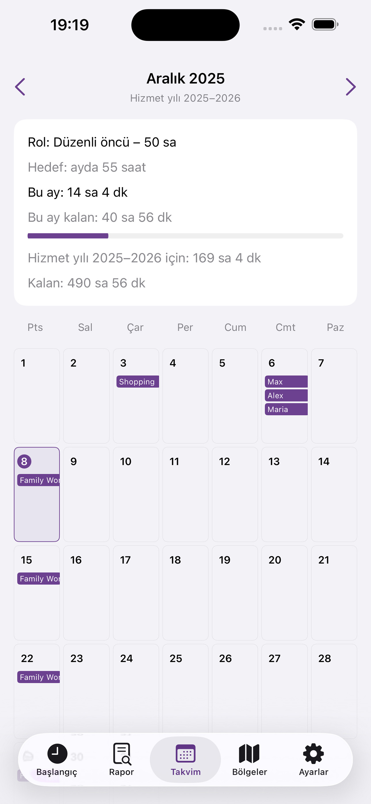
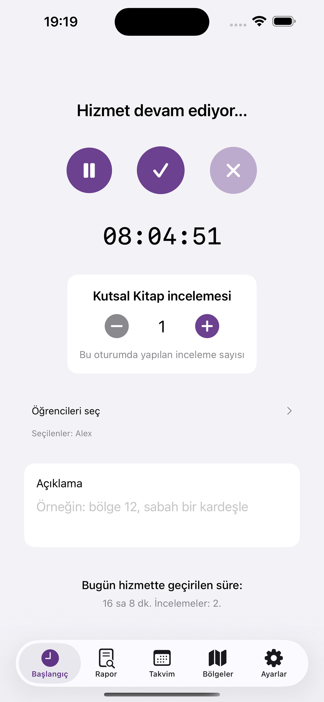
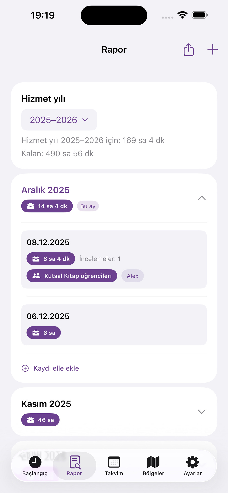
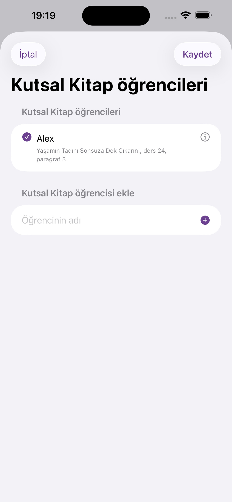
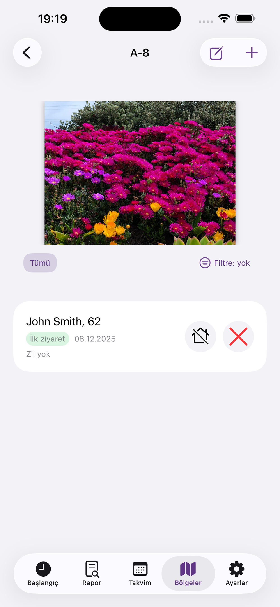
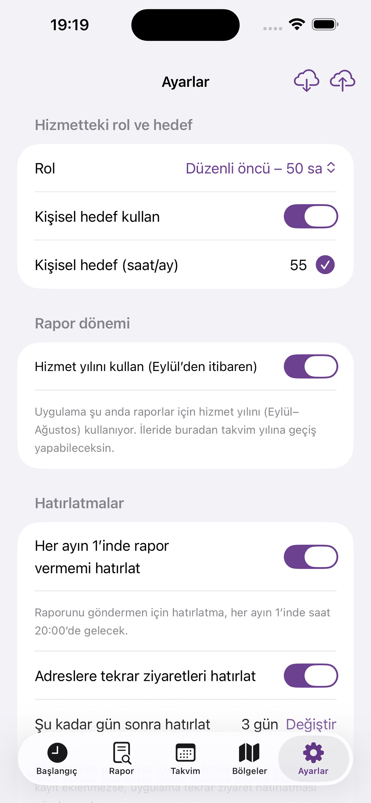
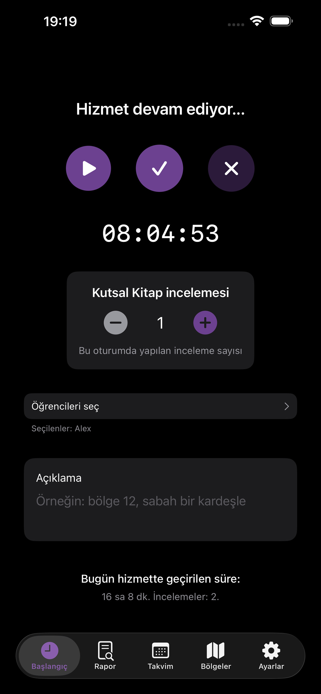
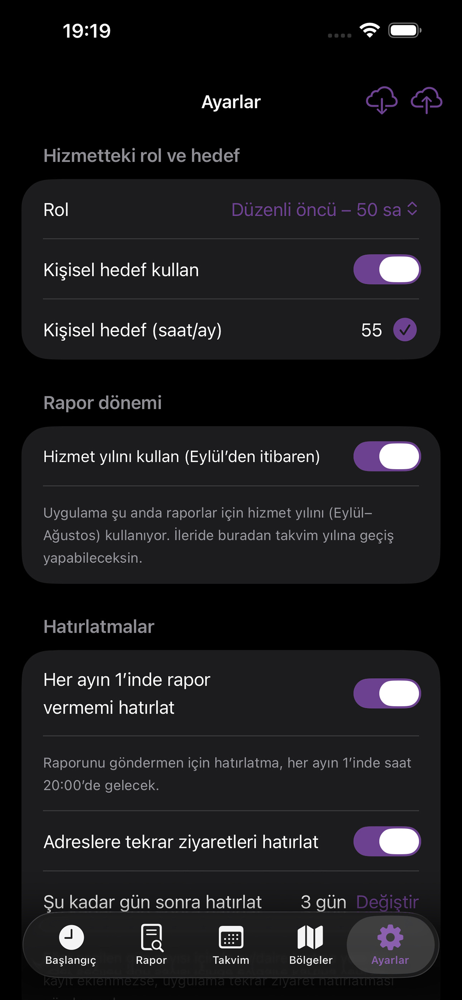

Tarla Hizmeti ve Öncülük İçin Eksiksiz Yardımcınız
JW Ministry, Yehova'nın Şahitlerinin tarla hizmeti için tasarlanmış iPhone ve iPad uygulamasıdır: Live Activities destekli sayaç, Kutsal Kitap tetkik öğrencileri, hizmet yılı raporları, öncü saat hedefleri ve saha kartları.



JW Ministry'nin Tüm Ekranlarını Keşfedin
Türkçe arayüzün gerçek ekran görüntüleri — hizmet sayacından Kutsal Kitap tetkiklerine, öncü takviminden sahalara ve OLED karanlık moda kadar.







Düzenli Bir Tarla Hizmeti İçin İhtiyacınız Olan Her Şey
Müjdeciler, yardımcı öncüler, daimi ve özel öncüler için özel olarak tasarlandı.
Akıllı Sayaç, Araç Takımları ve Dynamic Island
Sayacı uygulamadan, ana ekran widget'ından veya kilit ekranından başlatın. Aktif süre Dynamic Island'da her zaman görünür kalır.
Kutsal Kitap Tetkikleri ve Yayın İlerlemesi
Tetkikleri doğrudan rapor kayıtlarına bağlayın. Her öğrencinin “Sonsuza Dek Mutlu Bir Yaşam!” kitabındaki dersini takip edin.
Hizmet Rolleri ve Kişisel Saat Hedefleri
Müjdeci, Yardımcı Öncü (15 veya 30 saat), Daimi Öncü (50 saat), Özel Öncü (90 / 100 saat) ve özel aylık saat hedefini destekler.
Hizmet Yılı (Eylül–Ağustos) ve Takvim
Tarla hizmeti buluşmalarını ve aile ibadetini planlayın. Planlanan ve gerçekleşen saatleri karşılaştırın, planları kaydırarak rapora aktarın.
Sahalar, Apartmanlar ve Tekrar Ziyaret Hatırlatıcıları
Harita fotoğraflı, 10 renkli saha kartları ve bina/kat daire oluşturucu. Adres veya isimle arayın, tekrar ziyaret bildirimleri alın.
%100 Cihaz İçi Gizlilik ve iCloud Yedekleme
Kayıt yok, dış sunucu yok. Tüm kayıtlar ve saha fotoğrafları yalnızca iPhone/iPad'inizde kalır ve iCloud Drive'a yedeklenir.
Sürüm 1.8 Yenilikleri
- Takvimde aylık planlanan saatlerin otomatik toplamı ve çift Plan vs Gerçek ilerleme çubuğu.
- Takvimdeki planlanan bir hizmeti tek kaydırmayla doğrudan Rapor kaydına dönüştürme.
- Tüm sahalarda adres veya isimle anında arama ve saha kartları için 10 renk teması.
- Rapor sekmesinde gelecek hizmet yılı (2026–2027) desteği.
- En yeni iOS ve iPadOS sürümleri için tam optimizasyon ve güçlendirilmiş yedekleme koruması.
Müjdeciler ve Öncüler Neden JW Ministry'yi Seçiyor?
Tarla hizmeti raporu, öncü programı ve saha takibi için özellik karşılaştırması.
| Özellik | Kağıt Notlar | Eski Uygulamalar | JW Ministry 1.8 |
|---|---|---|---|
| Kilit ekranında ve Dynamic Island'da canlı sayaç | Hayır | Hayır | Evet (Live Activities) |
| Öncü saat (15, 30, 50 sa.) ve hizmet yılı (600 sa.) hesaplama | Manuel | Kısmen | Otomatik + Kişisel hedef |
| Takvimde Plan vs Gerçek karşılaştırması ve Rapora kaydırma | Hayır | Hayır | Tek dokunuşla |
| Apartman daire oluşturucu + Saha fotoğrafları ve 10 renk | Kağıt notlar | Sadece metin | Görsel kartlar + Arama |
| Tekrar ziyaret ve ayın 1'inde rapor gönderme hatırlatıcısı | Hayır | Temel | Akıllı iOS bildirimleri |
| %100 çevrimdışı gizlilik ve fotoğraflı tam iCloud Drive yedeği | Kaybolma riski | Telefon değişiminde hata | %100 Çevrimdışı ve güvenli |
| Yeni iOS, iPad, OLED karanlık mod ve 35+ dil desteği | — | Güncellenmiyor | Modern SwiftUI tasarımı |
Yehova'nın Şahitlerinin Tarla Hizmeti ve Öncülük Hizmeti İçin Tasarlandı
JW Ministry hizmet yılı boyunca müjdecilere ve öncülere nasıl yardımcı olur?
Daimi ve Özel Öncüler (50, 90 ve 100 saat / 600 saatlik Hizmet Yılı)
Eylül–Ağustos hizmet yılı boyunca aylık 50 saat ve yıllık 600 saat hedefinizi otomatik takip edin. Kişisel hedef (örn. 55 saat) belirleyin ve Takvimde planlanan ile gerçekleşen süreyi karşılaştırın.
- Aylık 50 saat ve hizmet yılı 600 saat otomatik bakiye
- Özel aylık saat hedefi (örn. 55 saat)
- Planlanan vs bildirilen saatler için çift ilerleme çubuğu
Yardımcı Öncüler (15 ve 30 saat) ve Cemaat Müjdecileri
Özel faaliyet aylarında veya Anma Yemeği döneminde tek dokunuşla Yardımcı Öncü (15 veya 30 saat) rolüne geçin. Her ayın 1'i saat 20:00 hatırlatıcısı raporunuzu zamanında vermenize yardımcı olur.
- 15 veya 30 saatlik yardımcı öncü hedefine hızlı geçiş
- Tek dokunuşla aylık rapor paylaşımı
- Her ayın 1'inde saat 20:00 otomatik hatırlatma
Evden Eve Sahalar, Apartmanlar ve Tekrar Ziyaretler
Harita fotoğraflı, 10 renkli dijital saha kartları oluşturun ve katlara göre daireleri otomatik üretin. “Evde yok” kayıtlarını tutun ve isim veya adresle arayın.
- Giriş ve katlara göre apartman daire oluşturucu
- Saha haritası fotoğrafları, 10 renk ve hızlı arama
- Belirlenen gün sonrasında otomatik tekrar ziyaret bildirimi
Tetkik Öğrencisi Takibi ve Eski Uygulamaların Modern Alternatifi
Her öğrencinin “Sonsuza Dek Mutlu Bir Yaşam!” kitabındaki dersini kaydedin. ServicePlanner ve MyTime yerine modern iPhone ve iPad çözümü.
- “Sonsuza Dek Mutlu Bir Yaşam!” ders ve kısım takibi
- Widget'lar, Dynamic Island ve OLED karanlık mod
- ServicePlanner ve MyTime için modern iOS alternatifi
Müjdeci ve Öncülerin Yorumları
JW Ministry'yi günlük hizmetlerinde kullanan kardeşlerin görüşleri.
“Takvimde planlanan saatlerin toplamını gerçekleşen saatlerle yan yana görmek 50 saatlik programımı korumamı çok kolaylaştırdı.”
“Kilit ekranındaki canlı sayaç ve Takvimdeki planı kaydırarak doğrudan rapora aktarma özelliği harika çalışıyor.”
“Apartman oluşturucu ve sahalarda isimle arama özelliği tüm kağıt notlarımın yerini aldı.”
35'ten Fazla Dile Tamamen Çevrildi
Uygulama arayüzü, araç takımları ve bildirimler iPhone veya iPad'inizin diline otomatik uyum sağlar:
JW Ministry'nin Geliştirilmesini Destekleyin
JW Ministry tamamen ücretsizdir; reklam veya abonelik içermez. Uygulama hizmetinizde size yardımcı oluyorsa gelecekteki iOS güncellemelerini ve yıllık Apple Developer lisansını destekleyebilirsiniz:
Kart ile Destek (Dünya Çapında)
Boosty veya Patreon üzerinden hızlı destek:
Doğrudan Kripto Transferi (%0 Komisyon)
Doğrudan geliştiricinin cüzdanına:
TQQxYhThQGngj887Lvq9TnKtyyYMcUDFNw
UQBNBroTUyMG0YqgiHGXwVKO_rKe5d2y7gXqvICREjBwuKYk
Sıkça Sorulan Sorular (SSS)
JW Ministry, JW Library uygulamasını nasıl tamamlar?
JW Library Kutsal Kitabı, yayınları okumak ve ibadetler için kullanılırken; JW Ministry kişisel tarla hizmeti kayıtlarınız içindir: saat sayacı, öncü programı (15, 30, 50 sa.), kişisel saha notları ve tetkik öğrencileri.
Raporlarım ve saha notlarım nerede saklanıyor?
Yalnızca kendi iPhone veya iPad cihazınızın hafızasında. Hiçbir veri dış sunuculara gönderilmez.
Verilerimi yeni bir iPhone'a nasıl aktarırım?
Ayarlar sekmesinde sağ üstteki bulut simgesine dokunarak tam yedeği iCloud Drive'a aktarın ve yeni cihazınızda tek dokunuşla geri yükleyin.
Uygulama hizmette internet olmadan çalışır mı?
Evet, mobil veri veya Wi-Fi gerektirmeden %100 çevrimdışı çalışır.